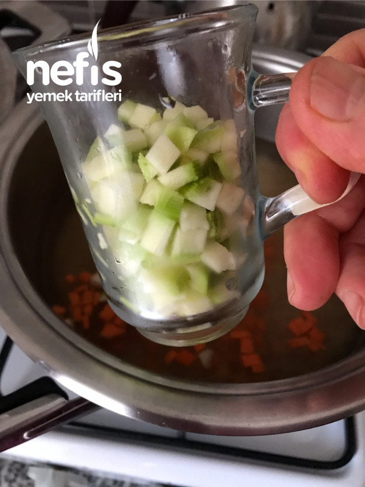
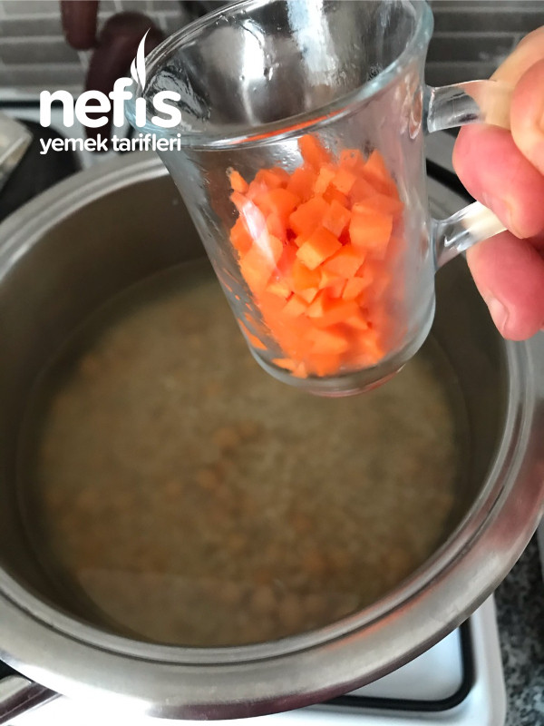
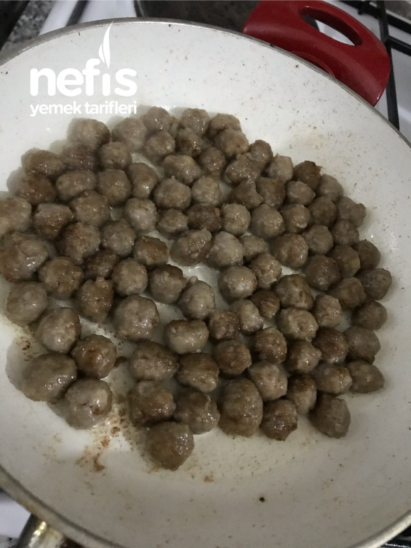
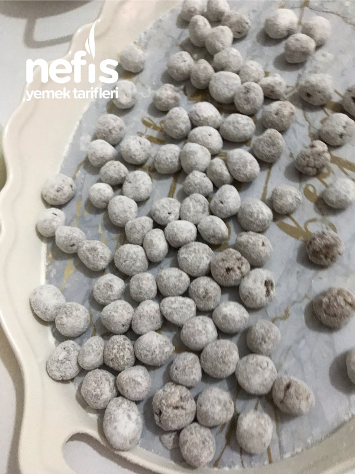
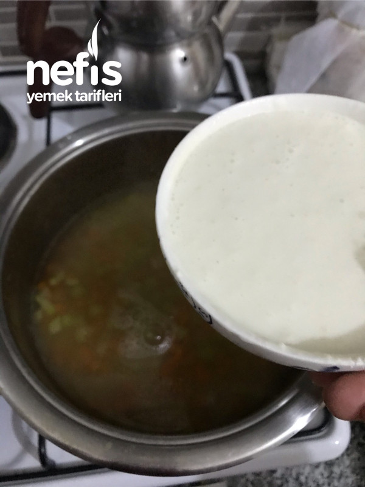
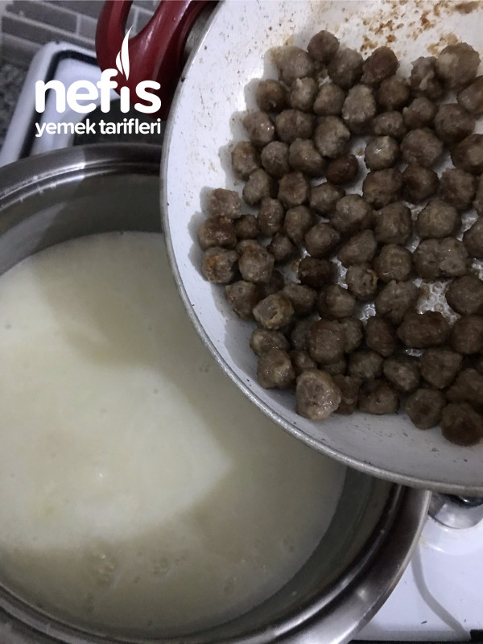
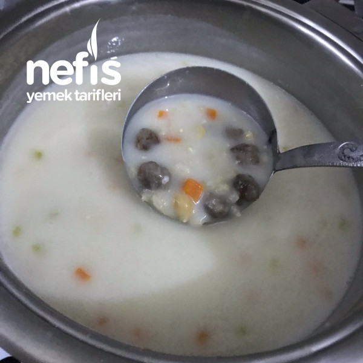
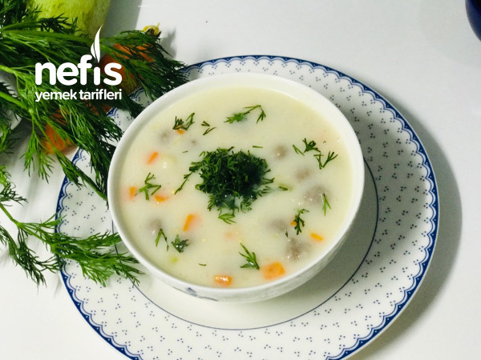

Bu çorbayı kime yaptıysam çok beğenildi
Tam bir vitamin deposu içinde yok yok.
İster soğuk ister sıcak herhalukarda çok lezzetli ve hafif bir çorba bilmeyenlere kesinlikle tavsiye ederim
Özellikle de davet yemeklerinde çok şık duruyor aynı zamanda hem çorba hemde yemek hükmünde.deneyip paylaşım yaparsanız sevinirim
Tarife geçelim....
Dört Mevsim Çorbası (Renk Cümbüşü ) Tarifi İçin Malzemeler
1 su bardağı aşurelik buğday (haşlanmış)
1 çay bardağı nohut (haşlanmış)
Yarım çay bardağı küp küp doğranmış havuç
Yarım çay bardağı küp küp doğranmış kabak
Bardak ölçüsü altta resmî var
1 su bardağı yoğurt
1,5 yemek kaşığı un
6 su bardağı su (kontrollü koyun) un girince kıvam artabilir açmak için sıcak su bulundurun
5/6 dal dereotu
Bardak ölçüsü 200 ml.su ilavesini kontrollü yapın
Köftesi İçin Malzemeler
100 gram orta yağlı kıyma
1 soğan (rendelenmiş)
Tuz karabiber
Köfteleri unlamak için; un
Kızartmak için; sıvı yağ
Dört Mevsim Çorbası (Renk Cümbüşü ) Tarifi Nasıl Yapılır?
İlk olarak; Kıyma ,baharatlar ve rende soğanı karıştırıp yoğuralım.
Misket büyüklüğünde (hatta daha küçük olursa daha iyi) yuvarlayalım.
Unladığımız tepside ileri geri yaparak her tarafına unu bulaştıralım.
Tavaya çok az sıvı yağ koyup köftelerimizi kızartalım.
Buğday nohut ve havucu tencereye alalım.
Sıcak su ekleyelim önce havuç pişsin ardından kabağı ilave edelim.
Yoğurt ve unu çırpalım bir kepçe çorba suyundan koyup ılınmasını sağlayalım.
Yoğurtlu karsımı çorbaya döküp sürekli karıştıralım.
Kızarttığımız köftelerimizi ilave edelim bir iki taşım daha kaynatıp ocaktan alalım.
Üzerine doğranmış dereotu serpelim.
Bu çorbaya karabiber çok yakışıyor yinede tercihe bağlı.
Afiyet Olsun
Dört Mevsim Çorbası (Renk Cümbüşü ) Tarifi Fotoğraflı Yapılışı








Nefis Yemek Tarifleri Whatsapp Kanalı açıldı, hemen Siz de katılın.
5 milyon'dan fazla kişinin takip ettiği Youtube kanalımızda videolu tariflerimizi bulabilirsiniz.
15 milyondan fazla kişinin indirdiği Nefis Yemek Tarifleri uygulaması ile 850.000'den fazla denenmiş tarif her zaman yanınızda.